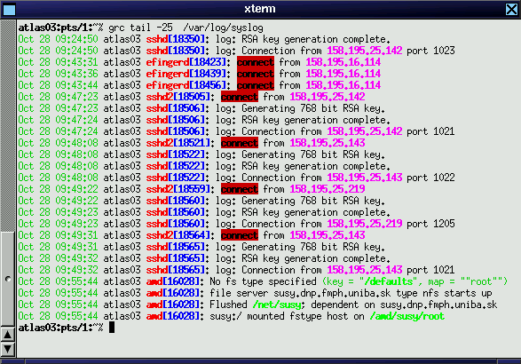
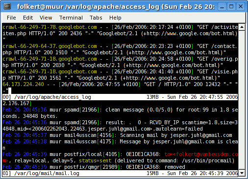

Generic Colouriser (grc):

Works with many different file formats.
Example:
grc tail -f /var/log/apache/access.log /var/log/apache/error.log
Multitail:

Works with even more file formats :) And is more of a full blown
"tail" with multi windows, diff outputs etc.. Very useful.
Examples:
Merge 2 logfiles in one window:
multitail /var/log/apache/access.log -I /var/log/apache/error.log
In one window show all new TCP connections and their state changes
using netstat while in the other window displaying the merged access
and error logfiles of apache
multitail -R 2 -l "netstat -t" /var/log/apache/access.log -I /var/log/apache/error.log